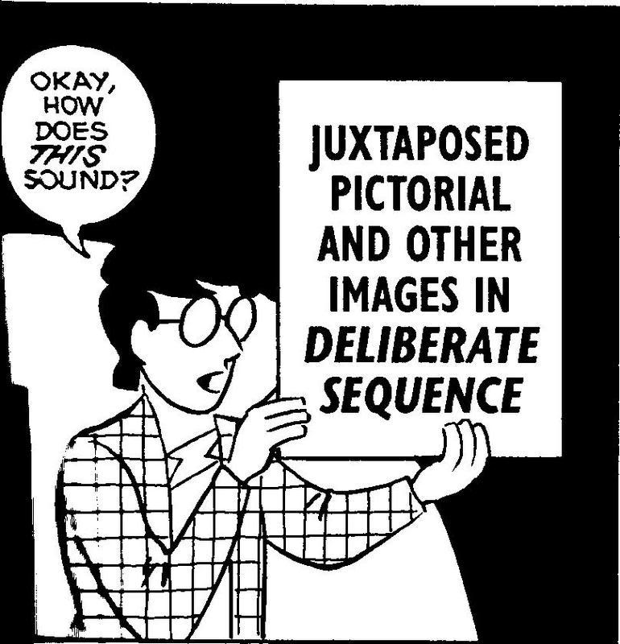
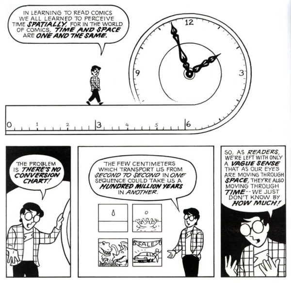
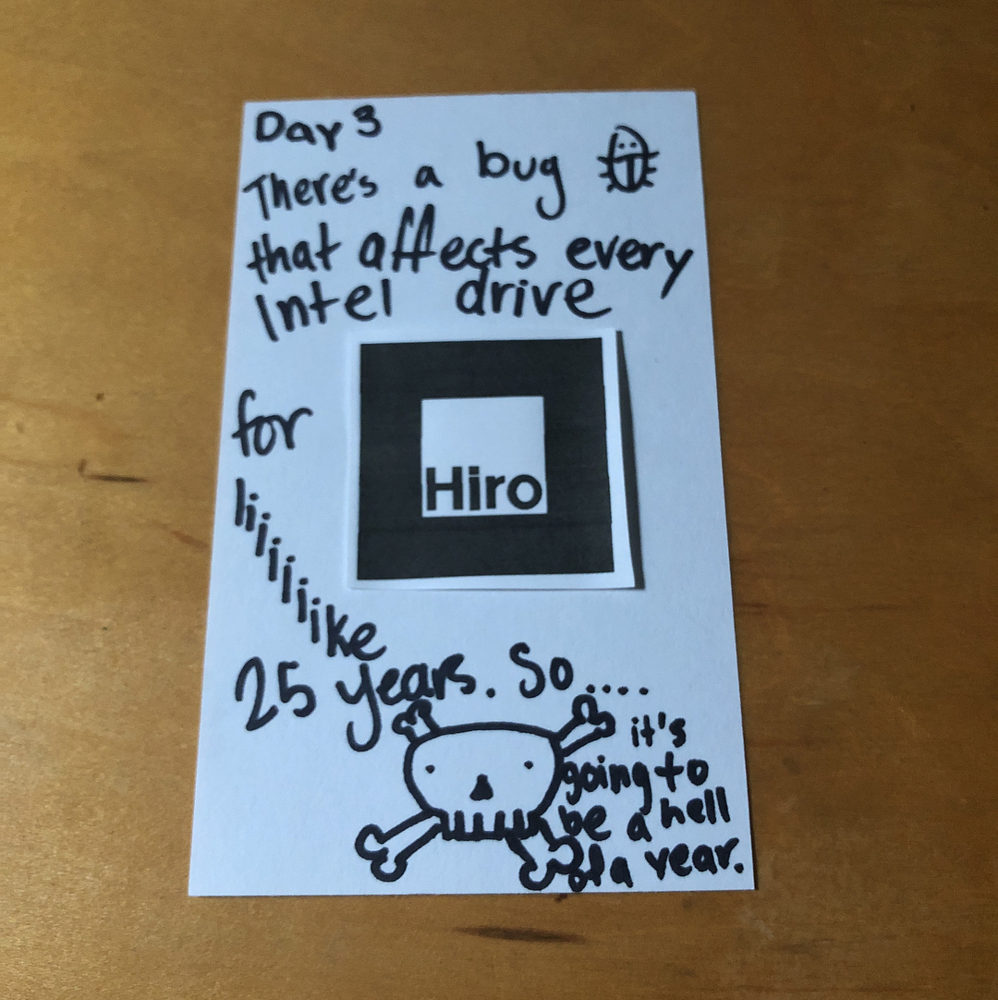
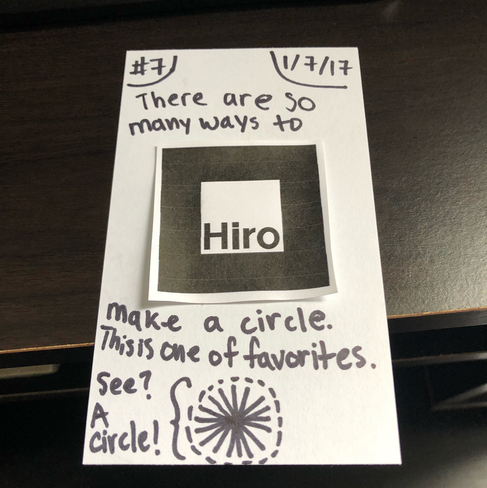
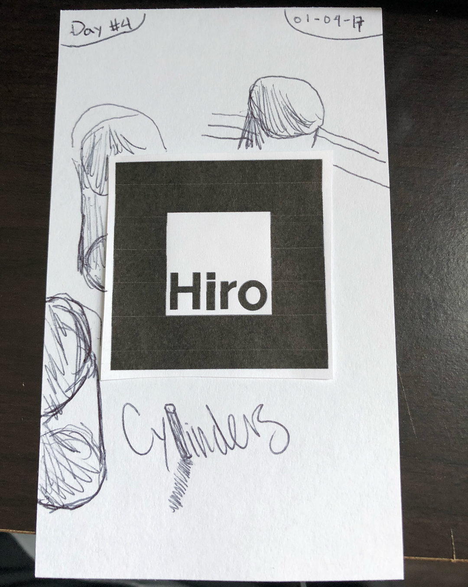

Sutu's
Prosthetic Reality
Space & time?

Space ↔ Time

(This is taken from 99% Invisible's
piece with Scott McCloud
on understanding comics.)
#ARctober: Day 1
#ARctober: Day 5
#ARctober: Day 6
Spectre Bug

Lines

Cylinders + Drawing!
